Things I've Made.
Modernist
Dialogues
Visual identity and campaign design for a contemporary architecture and design forum, exploring geometric composition, bold typography and modernist visual language.
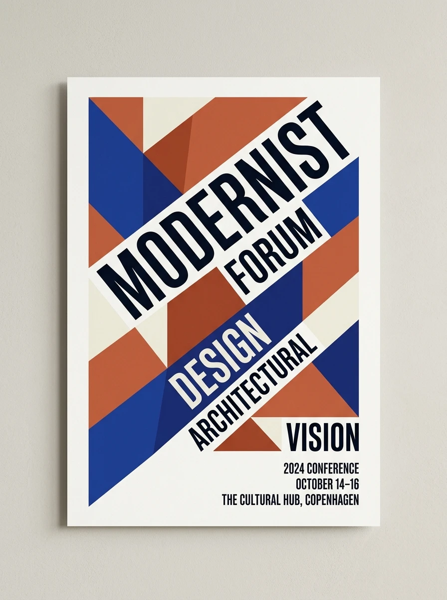
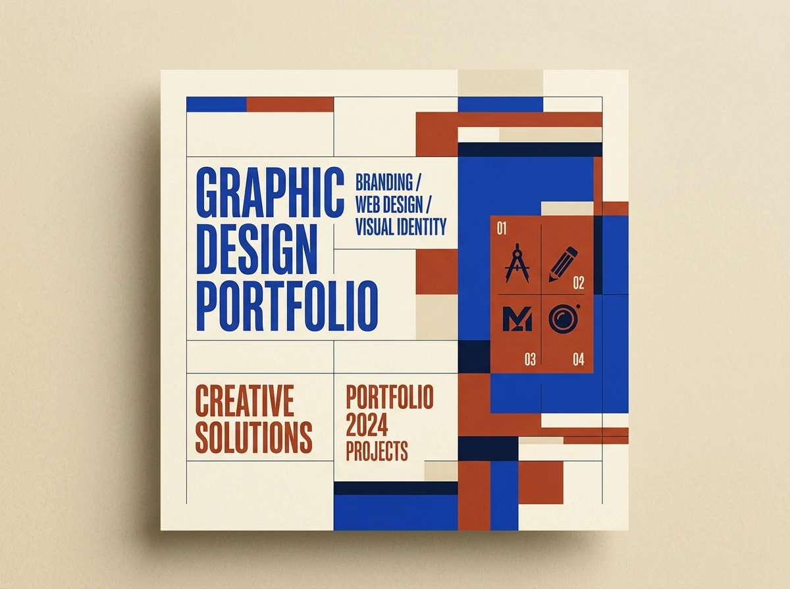
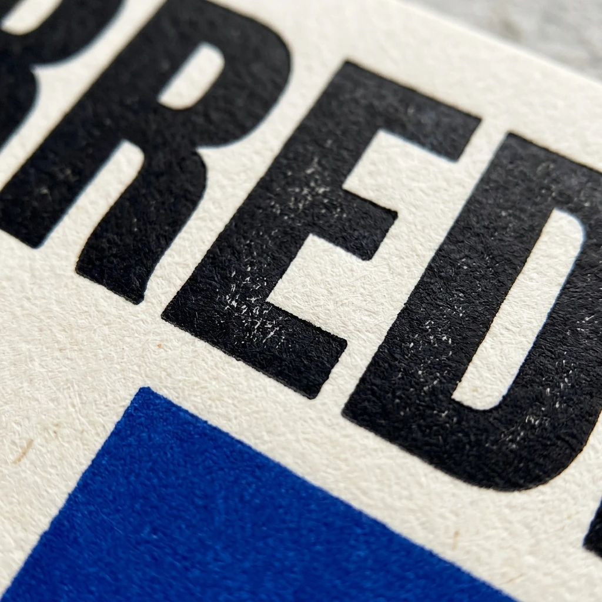
A Better
Mobile
Experience.
Rethinking the daily banking interaction through progressive simplification and considered visual hierarchy.
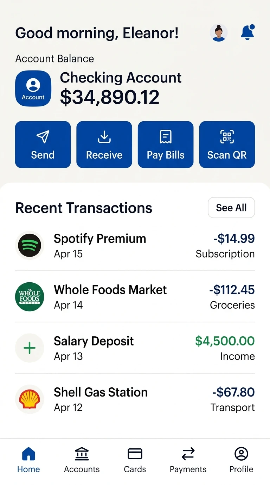
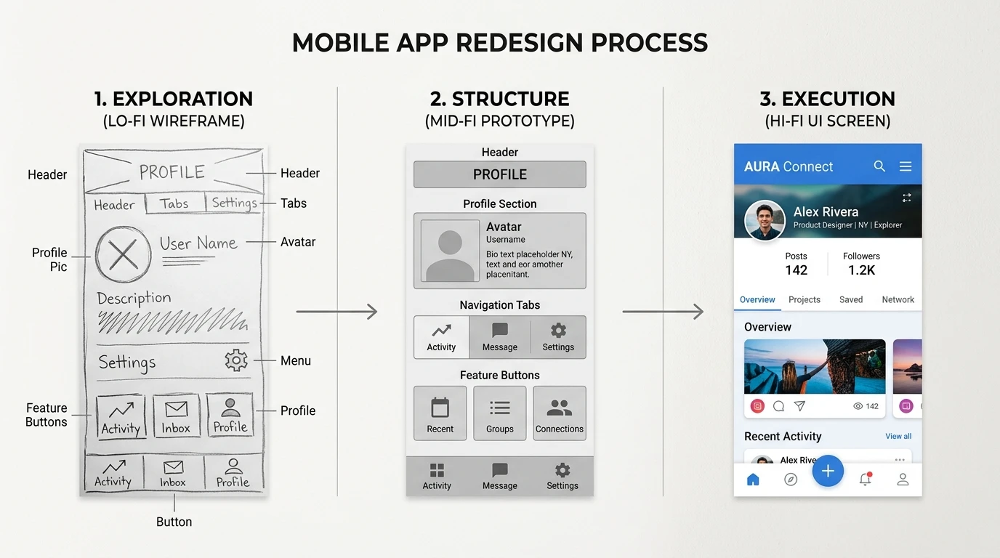
Existing interfaces overwhelmed users with competing actions and inconsistent navigation patterns.
Restructured information architecture around three core user journeys, validating each flow through iterative wireframing.
A streamlined interface that reduces cognitive load while surfacing the most important actions contextually.
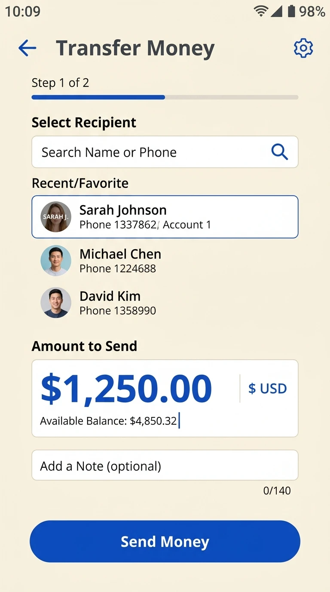
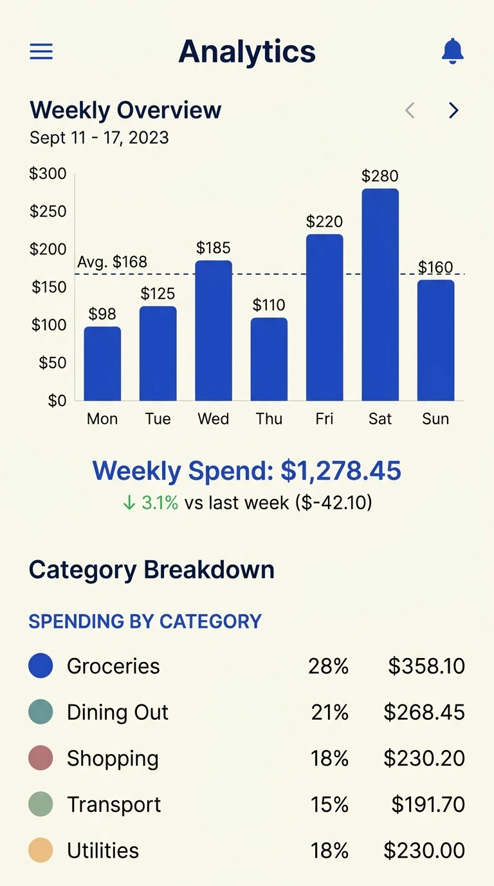
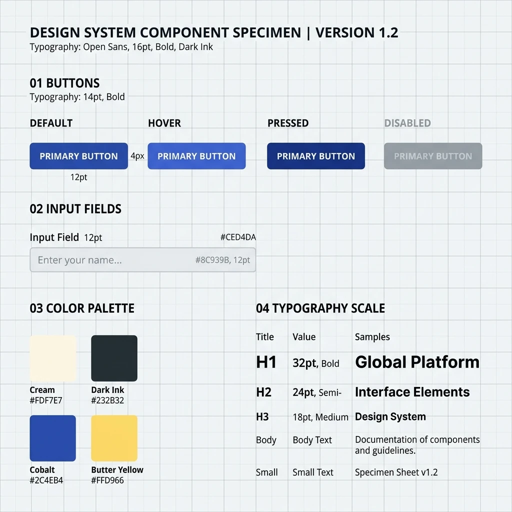
Stories In Motion.
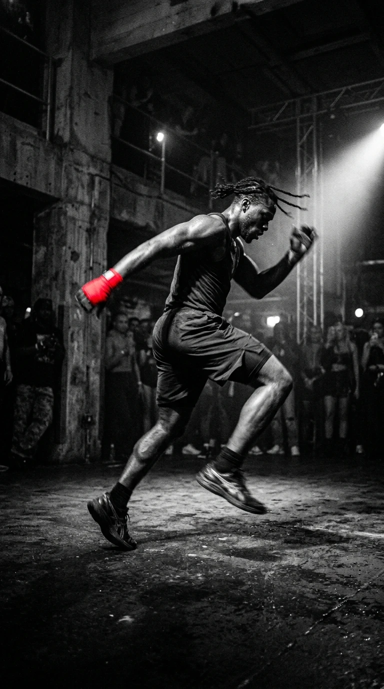
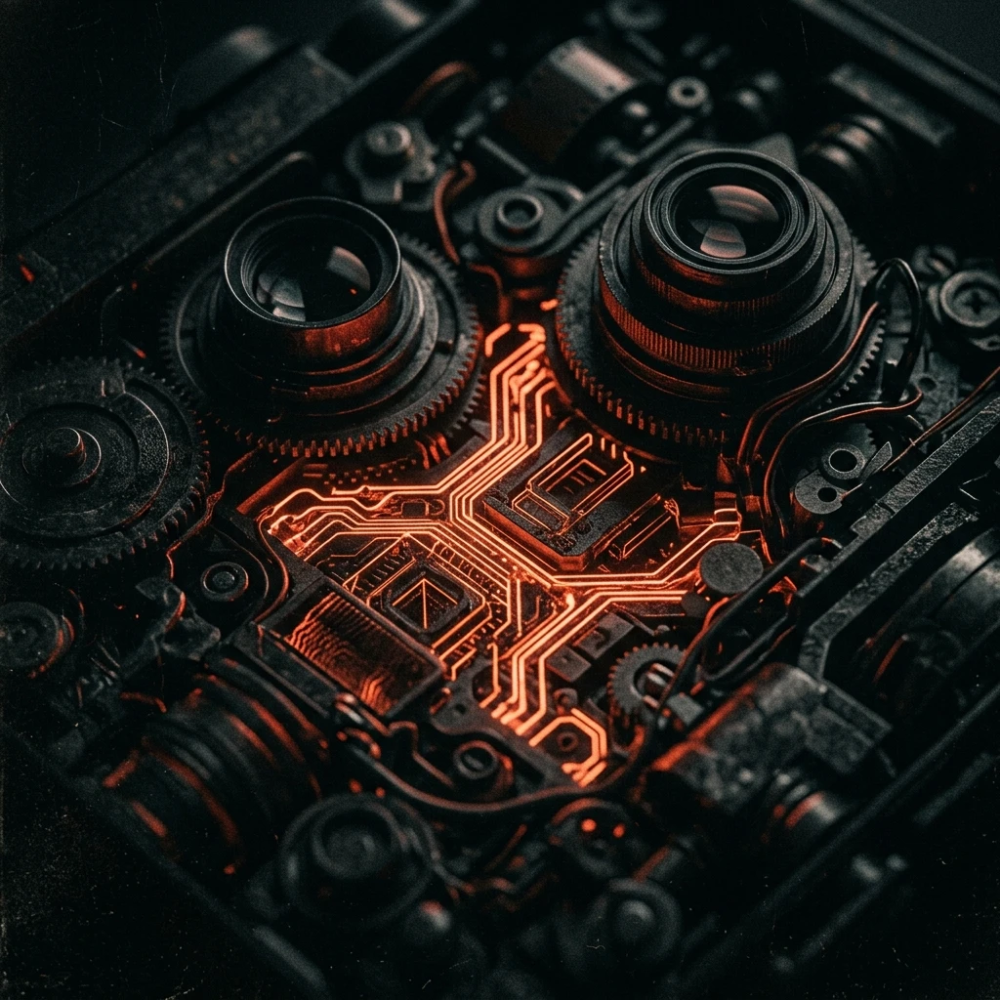
Imagined. Directed. Made.
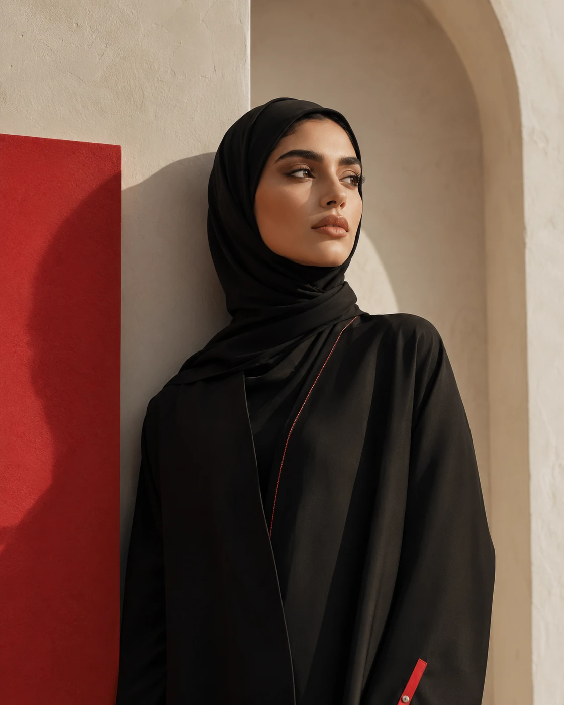
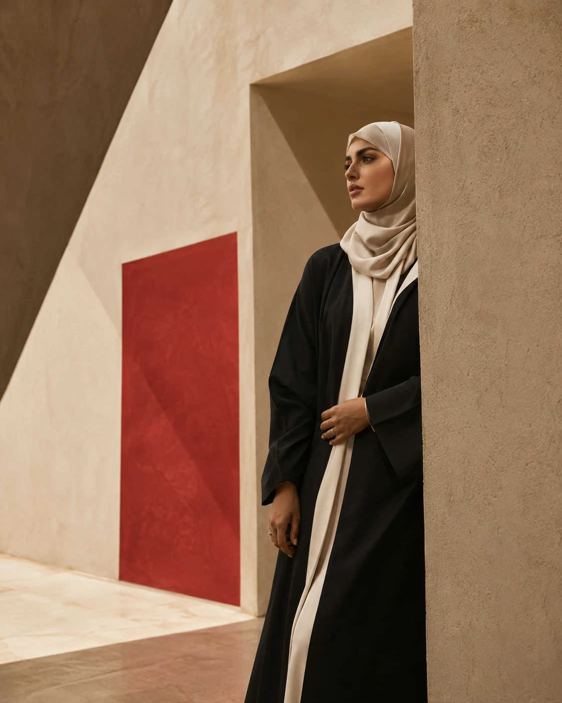
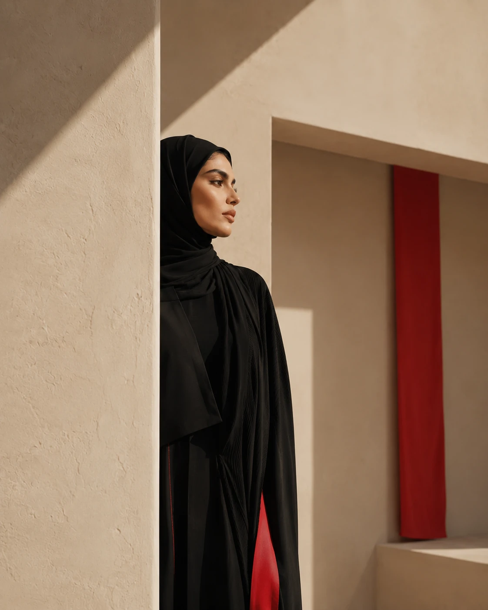
A Few More
Things.
- 01 Social Campaign Graphic 2026 ↗
- 02 Mobile Concept UI UX 2026 ↗
- 03 Brand System Branding 2025 ↗
- 04 AI Fashion Study AI Visuals 2026 ↗
- 05 Short Promo Film Motion 2026 ↗
- 06 Social Series Content 2025 ↗
What I
Work
Across.
01 / Graphic Design
Brand identities / Campaign visuals / Social content / Digital design
02 / UI UX
Wireframes / Interface design / Prototyping / Figma workflows
03 / Motion + Video
Video editing / Short-form content / Motion graphics / Social video
04 / AI Visuals
AI image generation / AI video / Creative compositing / Visual direction
I Design
With
Curiosity.
I am a multimedia designer based in Dubai, focused on the intersection of graphic design, UI/UX, and motion. I build brand systems, design functional digital products, and direct cinematic video content. By integrating AI-assisted creative workflows, I aim to expand visual possibilities while keeping human intent at the core of every project.
Download CV ↗